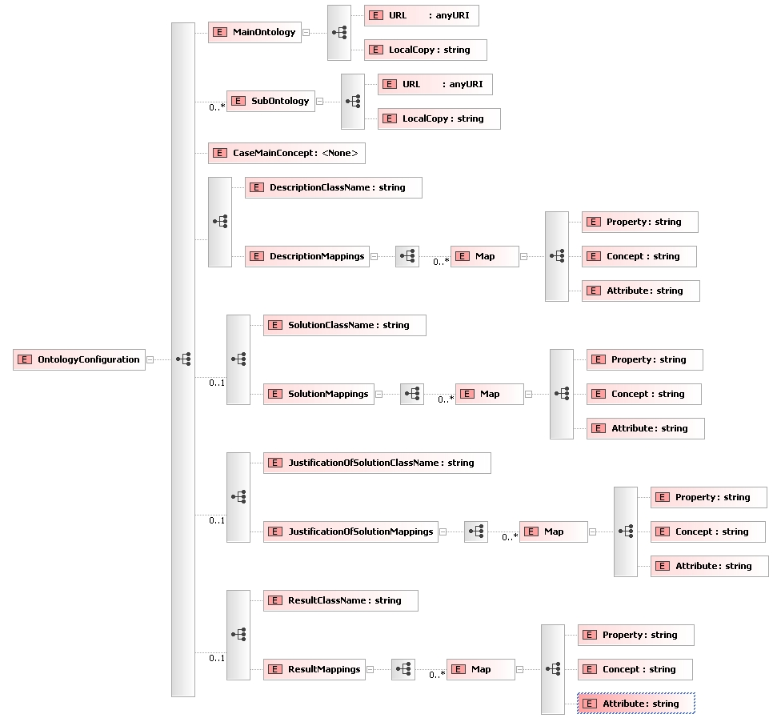

jcolibri.connector.OntologyConnector
jcolibri.connector.OntologyConnector
|
||||||||||
| PREV CLASS NEXT CLASS | FRAMES NO FRAMES | |||||||||
| SUMMARY: NESTED | FIELD | CONSTR | METHOD | DETAIL: FIELD | CONSTR | METHOD | |||||||||
java.lang.Object
public class OntologyConnector
Implements a generic Ontology connector. It uses OntoBridge to manage the ontologies and the reasoner. To configure this connector create a configuration xml file following this schema: /doc/configfilesSchemas/OntologyConnector.xsd:

This connector only maps case structures without compound attributes. All attributes must be Instance typed. For a complete example see Test 10.
Test10| Constructor Summary | |
|---|---|
OntologyConnector()
|
|
| Method Summary | |
|---|---|
void |
close()
If there was any modification to the ontology, the owl file is replaced with a new one that contains the changes. |
void |
deleteCases(java.util.Collection<CBRCase> cases)
Deletes cases in the ontology. |
java.lang.String |
getCaseMainConcept()
|
java.util.ArrayList<OntologyMapping> |
getDescriptionMappings()
|
java.util.ArrayList<OntologyMapping> |
getJustOfSolutionMappings()
|
OntologyInfo |
getMainOntologyInfo()
|
java.util.ArrayList<OntologyMapping> |
getResultMappings()
|
java.util.ArrayList<OntologyMapping> |
getSolutionMappings()
|
java.util.ArrayList<OntologyInfo> |
getSubOntologiesInfo()
|
void |
initFromXMLfile(java.net.URL file)
Initializes the connector from an XML config file. |
java.util.Collection<CBRCase> |
retrieveAllCases()
Returns max cases without any special consideration |
java.util.Collection<CBRCase> |
retrieveSomeCases(CaseBaseFilter filter)
UnImplemented. |
void |
storeCases(java.util.Collection<CBRCase> cases)
Stores cases into the ontology. |
| Methods inherited from class java.lang.Object |
|---|
clone, equals, finalize, getClass, hashCode, notify, notifyAll, toString, wait, wait, wait |
| Constructor Detail |
|---|
public OntologyConnector()
| Method Detail |
|---|
public void initFromXMLfile(java.net.URL file)
throws InitializingException
initFromXMLfile in interface Connectorfile - XMl file with the settings
InitializingException - Raised if the connector can not be initialezed.Connector.initFromXMLfile(java.net.URL)public java.util.Collection<CBRCase> retrieveAllCases()
Connector
retrieveAllCases in interface Connectorpublic java.util.Collection<CBRCase> retrieveSomeCases(CaseBaseFilter filter)
retrieveSomeCases in interface ConnectorConnector.retrieveSomeCases(jcolibri.cbrcore.CaseBaseFilter)public void storeCases(java.util.Collection<CBRCase> cases)
storeCases in interface Connectorcases - List of casesConnector.storeCases(java.util.Collection)public void close()
close in interface ConnectorConnector.close()public void deleteCases(java.util.Collection<CBRCase> cases)
deleteCases in interface Connectorcases - List of casesConnector.deleteCases(java.util.Collection)public java.lang.String getCaseMainConcept()
public java.util.ArrayList<OntologyMapping> getDescriptionMappings()
public java.util.ArrayList<OntologyMapping> getJustOfSolutionMappings()
public OntologyInfo getMainOntologyInfo()
public java.util.ArrayList<OntologyMapping> getResultMappings()
public java.util.ArrayList<OntologyMapping> getSolutionMappings()
public java.util.ArrayList<OntologyInfo> getSubOntologiesInfo()
|
GAIA - Group for Artificial Intelligence Applications http://gaia.fdi.ucm.es |
|||||||||
| PREV CLASS NEXT CLASS | FRAMES NO FRAMES | |||||||||
| SUMMARY: NESTED | FIELD | CONSTR | METHOD | DETAIL: FIELD | CONSTR | METHOD | |||||||||